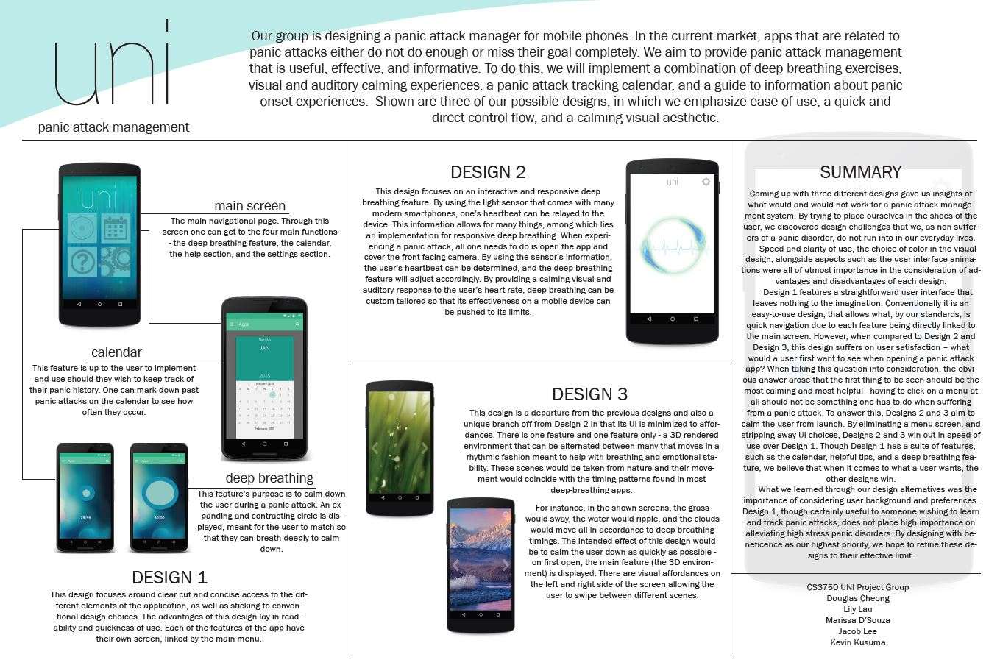

In the summer of 2016, I worked in a team of 5 to develop a mockup of an app that would 'get someone out of a jam' (our professor's words, not mine) for a class on Human Computing Interaction. As a result, we chose to center our app on managing panic attacks - calming someone down in the midst of a stressful situation. As the lead of this group, I drove the main development of our mockup, making major UI and UX design decisions that took into account HCI principles. Taking notes from The Design of Everyday Things by Don Norman, we built a mockup that we believed would maximize effectiveness to even an inexperienced user.
Over the course of the project, we came up with multiple iterations of designs that we believed would be optimal - with each iteration we discovered some new paradigm that would prompt the addition or removal of a feature in order to streamline the flow of the app. During the mid semester presentation, we showcased our three main designs, each with their own strengths and weaknesses that we hoped to combine into one magna carta.
Final Design

The main portion - deep breathing!
Taking components from our three previous designs, we managed to put out a mockup that we believe would be highly successful if produced and released. The main, initial screen carries the heft of the app's purpose - calming someone down via a deep breathing rhythm. Other functions are accessed via the affordances on the edges of the screen, including an emergency call feature, a calendar, and a settings feature.
Overall, I'm proud of what we accomplished as a team, along with my own ability to lead. I was able to practice my skills in Adobe After Effects, Illustrator, and Photoshop - along with the massive amount of HCI principles that were packed into the course. I hope to be able to do more UI design and front end development in the future!